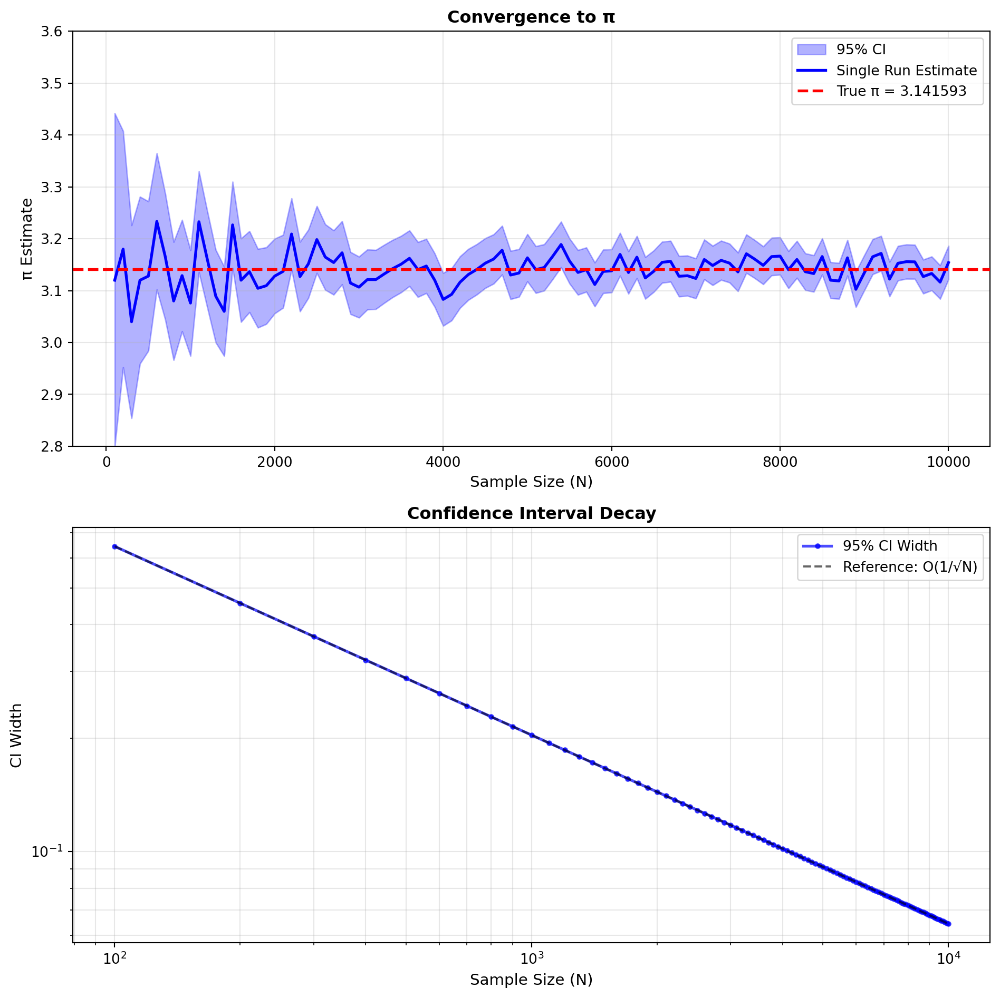

Drag the slider below to add points to the square; the fraction landing inside the circle, times 4, estimates \(\pi\). The slider’s play button adds them for you.
VM =window.VM// vmTheme re-runs every cell that bakes a palette color into a trace when// the reader toggles dark mode; chartColors is that palette.vmTheme = Generators.observe(notify => VM.plotting.onThemeChange(notify))chartColors = VM.plotting.colors(vmTheme)
piMaxN =10000piDefaultSeed =1piDefaultN =1000piTraceOptions = ["Inside","Outside","Circle and square"]piTraceColors =newMap([ ["Inside", chartColors.fn], ["Outside", chartColors.warn], ["Circle and square", chartColors.ink]])
// Draws a fresh set of points. The first draw (on page load) uses the seed// in the URL, so a shared link reproduces the same points.viewof piRedraw = {const button = Inputs.button("Draw new points", {value:0,reduce: v => v +1}) button.classList.add("ojs-auto")return button}
// piPoints: all piMaxN points, drawn once per seed. The sample-size slider// only chooses how many of them to show, so moving it never redraws the// points already on screen. insideCount[i] counts the hits among the// first i points.piPoints = {const rng = VM.sampling.seededRandom(piSeed)const xs = [], ys = [], inside = [], insideCount = [0]for (let i =0; i < piMaxN; i++) {const x =2*rng() -1const y =2*rng() -1const hit = x * x + y * y <=1 xs.push(x) ys.push(y) inside.push(hit)let count = insideCount[i]if (hit) count++ insideCount.push(count) }return {xs, ys, inside, insideCount}}
// The estimate and its estimated standard error, 4 * sqrt(p(1 - p) / N)// with p the observed fraction inside.piStats = {const n = piNconst inside = piPoints.insideCount[n]const p = inside / nconst estimate =4* pconst stdError =4*Math.sqrt(p * (1- p) / n)return {n, inside, estimate, stdError,error:Math.abs(estimate -Math.PI)}}
We begin with a classic Monte Carlo application: estimating the value of \(\pi\) using geometric probability. This example illustrates the core principles of Monte Carlo simulation while providing an intuitive geometric interpretation.
Consider a unit circle inscribed in a square with side length 2, both centered at the origin. The circle has radius \(r = 1\) and area \(A_{\text{circle}} = \pi\), while the square has area \(A_{\text{square}} = 4\). The ratio of these areas is \(\pi/4\).
Square: side length \(2r = 2\), area \(A_{\text{square}} = (2r)^2 = 4\)
Area ratio: \(\frac{A_{\text{circle}}}{A_{\text{square}}} = \frac{\pi}{4}\)
If we randomly sample points uniformly within the square, the probability that any point falls inside the inscribed circle equals this area ratio. This geometric probability provides our pathway to estimating \(\pi\).
To formulate this as a Monte Carlo problem, let \((X, Y)\) be uniformly distributed on \([-1, 1] \times [-1, 1]\) and define the indicator random variable: \[I(X, Y) = \mathbf{1}_{\{X^2 + Y^2 \leq 1\}} = \begin{cases}
1 & \text{if } X^2 + Y^2 \leq 1 \text{ (inside circle)} \\
0 & \text{if } X^2 + Y^2 > 1 \text{ (outside circle)}
\end{cases}\]
The expected value of this indicator function gives us the desired probability: \[\mathbb{E}[I(X, Y)] = P(X^2 + Y^2 \leq 1) = \frac{\text{Area of unit circle}}{\text{Area of square}} = \frac{\pi}{4}\]
Therefore \(\pi = 4\mathbb{E}[I(X, Y)]\), and given \(N\) independent samples \((X_1, Y_1), \ldots, (X_N, Y_N)\), our Monte Carlo estimator is: \[\hat{\pi}_N = 4 \cdot \frac{1}{N}\sum_{i=1}^{N} I(X_i, Y_i) = \frac{4 \cdot \text{(number of points inside circle)}}{N}\]
3.1 Statistical Properties
This estimator possesses several important statistical properties. First, it is unbiased: \[\mathbb{E}[\hat{\pi}_N] = 4\mathbb{E}\left[\frac{1}{N}\sum_{i=1}^{N} I_i\right] = 4\mathbb{E}[I] = 4 \cdot \frac{\pi}{4} = \pi\]
Since \(I \sim \text{Bernoulli}(\pi/4)\), we can compute the variance. The indicator has variance \(\text{Var}(I) = \frac{\pi}{4}(1 - \frac{\pi}{4}) = \frac{\pi(4-\pi)}{16}\), which gives our estimator variance: \[\text{Var}(\hat{\pi}_N) = 16 \cdot \frac{\text{Var}(I)}{N} = \frac{\pi(4-\pi)}{N}\]
The standard error is therefore \(\text{SE}(\hat{\pi}_N) = \sqrt{\frac{\pi(4-\pi)}{N}}\).
ImportantConvergence Rate
The standard error decreases as \(O(1/\sqrt{N})\), which is the typical Monte Carlo convergence rate. To gain one decimal place of accuracy, we need approximately 100 times more samples.
By the Central Limit Theorem, for large \(N\) we have the asymptotic distribution: \[\sqrt{N}(\hat{\pi}_N - \pi) \xrightarrow{d} \mathcal{N}(0, \pi(4-\pi))\]
This provides approximate confidence intervals: \[\hat{\pi}_N \pm z_{\alpha/2} \sqrt{\frac{\pi(4-\pi)}{N}}\]
3.2 Convergence Analysis
To empirically demonstrate the convergence properties, we generate multiple π estimates for various sample sizes and examine how the confidence intervals narrow as \(N\) increases.

Figure 3.1: Convergence analysis of Monte Carlo π estimation. Top: single run estimates with theoretical 95% confidence intervals. Bottom: confidence interval width decay showing the O(1/√N) convergence rate on log-log scale.
The figure demonstrates that as the sample size \(N\) increases, the mean estimate approaches the true value of \(\pi\) and the confidence interval narrows, confirming the \(O(1/\sqrt{N})\) convergence rate.
TipMonte Carlo Principle
This example demonstrates the fundamental Monte Carlo approach: reformulate a deterministic problem (computing \(\pi\)) as the expectation of a random variable, then estimate that expectation using sample averages.
3.3 Buffon’s Needle
A second, much older way to estimate \(\pi\) by random sampling goes back to Buffon (1777). Rule the plane with parallel lines a distance \(t\) apart and drop a needle of length \(\ell \le t\) on it at random: its center lands uniformly between two lines and its angle \(\theta\) with the lines is uniform on \([0, \pi)\). The needle crosses a line exactly when its center is within \(\tfrac{\ell}{2}\sin\theta\) of one, which happens with probability
If \(C\) of \(N\) needles cross a line, then \(C/N \approx 2\ell/(\pi t)\), giving the estimator
\[
\hat{\pi}_N = \frac{2 \ell N}{t\, C}.
\]
Unlike \(\hat\pi_N\) from the circle, this estimator is a ratio: it is biased for finite \(N\), undefined until the first crossing, and its standard error, estimated from \(\hat p = C/N\) by the delta method as \(\frac{2\ell}{t}\sqrt{\frac{1 - \hat p}{N \hat p^3}}\), is larger for short needles, which cross less often.
buffonMaxN =2000buffonDefaultSeed =1buffonDefaultN =100buffonDefaultLength =0.8// Lines y = 0, 1, ..., 6 (spacing t = 1) across a board 8 wide.buffonSpacing =1buffonWidth =8buffonHeight =6buffonTraceOptions = ["Crossing a line","Not crossing","Lines"]buffonTraceColors =newMap([ ["Crossing a line", chartColors.alt], ["Not crossing", chartColors.fn], ["Lines", chartColors.muted]])
viewof buffonRedraw = {const button = Inputs.button("Drop new needles", {value:0,reduce: v => v +1}) button.classList.add("ojs-auto")return button}
// buffonDrops: each needle's center and angle, drawn once per seed. The// needle-length slider only rescales the needles about their centers, so// changing it shows the same drops with longer or shorter needles.buffonDrops = {const rng = VM.sampling.seededRandom(buffonSeed)const cx = [], cy = [], theta = []for (let i =0; i < buffonMaxN; i++) { cx.push(buffonWidth *rng()) cy.push(buffonHeight *rng()) theta.push(Math.PI*rng()) }return {cx, cy, theta}}
// buffonNeedles: endpoints and crossings for the current needle length;// crossingCount[i] counts the crossings among the first i needles.buffonNeedles = {const half = buffonLength /2const x1 = [], y1 = [], x2 = [], y2 = [], crosses = [], crossingCount = [0]for (let i =0; i < buffonMaxN; i++) {const dx = half *Math.cos(buffonDrops.theta[i])const dy = half *Math.sin(buffonDrops.theta[i])const ya = buffonDrops.cy[i] - dyconst yb = buffonDrops.cy[i] + dy x1.push(buffonDrops.cx[i] - dx) x2.push(buffonDrops.cx[i] + dx) y1.push(ya) y2.push(yb)// A line y = k*t lies between the ends exactly when they fall in// different strips.const hit =Math.floor(ya / buffonSpacing) !==Math.floor(yb / buffonSpacing) crosses.push(hit)let count = crossingCount[i]if (hit) count++ crossingCount.push(count) }return {x1, y1, x2, y2, crosses, crossingCount}}
Try a short needle: the crossings become rare, and the estimate jumps around far more for the same \(N\) – the standard error grows like \(\ell^{-1/2}\) as \(\ell \to 0\).